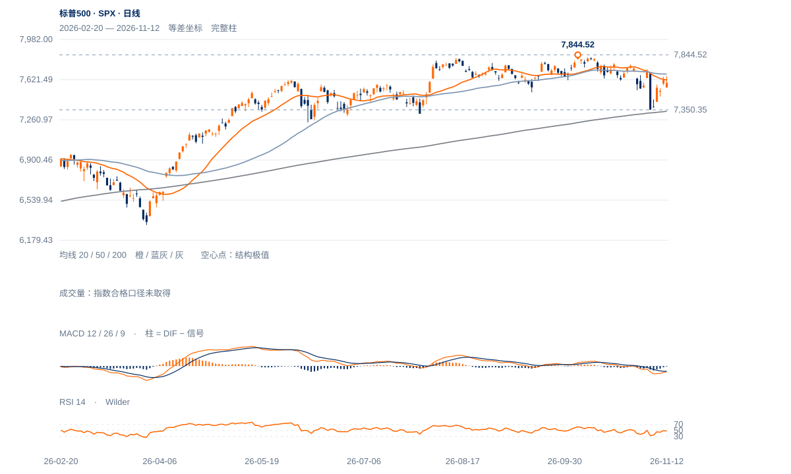

较低高点仍然有效
10月6日7844.52后，10月21日7770.40、28日7758.43、11月4日7715.57依次受压。7592.40仍低于最后中峰；11月5日7350.35低点只完成了局部反弹。
未来1—5个美股交易日仍以修复拉锯看待；7544—7572承接与7716中峰之间的保持质量最关键。1—3周背景尚未转为新上升趋势。

查看大图 ↗10月6日7844.52后，10月21日7770.40、28日7758.43、11月4日7715.57依次受压。7592.40仍低于最后中峰；11月5日7350.35低点只完成了局部反弹。
20日线7618.15、50日线7671.18均在上方。11日收7619.38，12日回7592.40；200日线7337.35仍在下方，支持修复有空间，但没有替代中峰确认。
11日形成7543.92—7571.88整日上缺口；12日低7550.84进入缺口但未填到7543.92，收盘仍在其上。窗口支撑正在被测试，尚非已完全失效。
200日线仍上行，11月5日低点之后反弹明显；若缺口继续保持并收回7671—7716，当前拉锯判断应向修复延续修正。